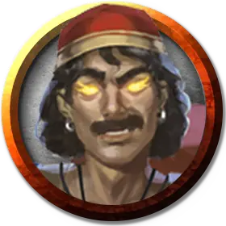

Навид
Navid
Большой Элементаль, обычно законно-злой

Класс Доспеха 17 (природный доспех)
Хиты 200 (16к10 + 112)
Скорость 40 футов, летая 60 футов
| мод | спас | ||
|---|---|---|---|
| СИЛ | 22 | +6 | +6 |
| ЛОВ | 12 | +1 | +1 |
| ТЕЛ | 24 | +7 | +7 |
| мод | спас | ||
|---|---|---|---|
| ИНТ | 16 | +3 | +7 |
| МДР | 15 | +2 | +6 |
| ХАР | 16 | +3 | +7 |
Иммунитет к урону огонь
Чувства тёмное зрение 120 футов, пассивное Восприятие 12
Языки Игнан
Опасность 11 (7200 опыта)
Бонус мастерства +4
Среда обитания Пустыня
Особенности
Элементальная гибель. Если Навид умирает, его тело распадается во вспышке огня и клубах дыма, оставляя только снаряжение, которое Навид носил и нёс.
Врождённое колдовство. Базовой характеристикой Навида является Харизма (Сл спасброска от заклинания 15, +7 к попаданию атаками заклинаниями). Он может накладывать следующие заклинания, не нуждаясь в материальных компонентах:
• Неограниченно: обнаружение магии [detect magic], превращение [polymorph];
• 3/день каждое: увеличение/уменьшение [enlarge/reduce], языки [tongues];
• 1/день каждое: газообразная форма [gaseous form], невидимость [invisibility], образ [major image], огненная стена [wall of fire], призыв элементаля [conjure elemental] (только огненный элементаль), уход в иной мир [plane shift].
Вариант: Способности гениев. Гении обладают различными магическими способностями, включая заклинания. Некоторые владеют столь великой силой, что могут менять обличья или изменять природу реальности.
Маскировка. Некоторые гении могут скрыть свою истинную природу, наложив на себя иллюзию сходного по сложению другого существа. Такие гении могут неограниченно накладывать заклинание маскировка [disguise self], зачастую с увеличенной длительностью. Более могущественные гении могут накладывать заклинание истинное превращение [true polymorph] от одного до трёх раз в день, возможно, с увеличенной длительностью. Такие гении могут менять только собственный облик, и крайне редко могут накладывать подобные заклинания на других существ или предметы.
Желания. Среди смертных ходят легенды о гениях, исполняющих желания. Но лишь могущественнейшие из гениев, например, их знатные представители, могут это сделать. Те из них, кто обладают такой силой, могут даровать исполнение от одного до трёх желаний любому существу, кроме другого гения. Если гений уже исполнил свой предел желаний, он не сможет сделать это вновь в течение некоторого времени (обычно 1 год), и, согласно законам вселенной, один и тот же гений может потратить свой лимит желаний на другое существо только один раз в жизни этого существа.
Чтобы гений исполнил желание, существо должно сформулировать его, находясь в 60 футах от гения. После этого гений накладывает заклинание исполнение желаний [wish], воспроизводящее эффект. Изворотливые по своей природе гении могут попытаться извратить желание, воспользовавшись несовершенством его формулировки. Как правило, искажение формулировок гении оборачивают себе на пользу.
Действия
Мультиатака. Навид совершает две атаки скимитаром, либо два раза использует Метание пламени.
Скимитар. Рукопашная атака оружием: +10 к попаданию, досягаемость 5 футов, одна цель. Попадание: Рубящий урон 13 (2к6 + 6) плюс урон огнём 7 (2к6).
Метание пламени. Дальнобойная атака заклинанием: +7 к попаданию, дистанция 120 футов, одна цель. Попадание: Урон огнём 17 (5к6).